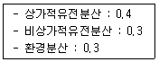
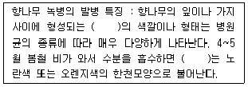
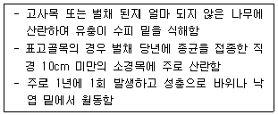

임업종묘기사 (2015-08-16 기출문제)
1과목: 조림학
1. 삽목 발근이 잘 되는 수종으로만 짝지어진 것은?
- 밤나무, 오리나무
- 무궁화, 배롱나무
- 호두나무, 은행나무
- 신갈나무, 쥐똥나무
(정답률: 알수없음)

2. 양묘과정 중 해가림 시설을 해야 하는 수종으로만 짝지어진 것은?
- 아까시나무, 삼나무, 편백
- 잣나무, 소나무, 사시나무
- 소나무, 아까시나무, 곰솔
- 가분비나무, 잣나무, 전나무
(정답률: 알수없음)
3. 수목종자의 발아촉진 방법과 해당 수종을 연결한 것으로 옳지 않은 것은?
- 채파 - 향나무
- 황산처리 - 옻나무
- 침수처리 - 삼나무
- 노천매장 - 단충나무
(정답률: 알수없음)
4. 산벌작업의 특징으로 옳지 않은 것은?
- 임지보호 효과가 있다.
- 음수의 갱신이 가능하다.
- 개벌작업에 비해 기술요구도가 낮다.
- 예비벌, 하종벌, 후벌 순서로 진행한다.
(정답률: 알수없음)
5. C3식물에서 CO2를 받아들이는 첫 번째 효소는?
- PEP 효소
- Malic 효소
- Pyruvic 효소
- Rubisco 효소
(정답률: 알수없음)
6. 풀베기에 대한 설명으로 옳은 것은?
- 잡초가 다 자란 9월 이후에 실시한다.
- 소나무는 다른 수종보다 늦게 실시한다.
- 묘목을 심은 뒤 1~2년 동안에만 실시한다.
- 한해나 풍해가 우려되는 조림지는 둘레베기를 하는 것이 좋다.
(정답률: 알수없음)
7. 생가지치기를 할 경우 절단부위가 썩을 위험성이 큰 수종으로만 짝지어진 것은?
- 편백, 자작나무
- 소나무, 버드나무
- 단풍나무, 물푸레나무
- 일본잎갈나무, 벚나무
(정답률: 알수없음)
8. 2-1로 표시된 묘목의 설명으로 옳은 것은?
- 2년생 실생묘
- 3년생 이식묘
- 3년생 접목묘
- 3년생 삽목묘
(정답률: 알수없음)
9. 수목의 목부 중 수액이동 조직이 아닌 것은?
- 수(pith)
- 도관(vessel)
- 세포막공(pit)
- 가도관(tracheid)
(정답률: 알수없음)
10. 편백과 화백의 공통점으로 옳지 않은 것은?
- 측백속이다.
- 일가화 수종이다.
- 일본에서 도입되었다.
- 내음성은 중성에 가깝다.
(정답률: 알수없음)
11. 종자가 결실 주기가 5년 이상인 수종은?
- Abies hlophylla Max.
- Larix leptolepis GORDON
- Gryptomeria japonica D. Don
- Pinus densifloraSIEB,et ZUCC
(정답률: 알수없음)
12. 소나무와 곰솔을 비교한 설명으로 옳지 않은 것은?
- 곰솔의 침엽은 굵고 길다.
- 소나무의 겨울눈은 굵고 회백색이다.
- 소나무 수피는 적갈색이고 곰솔은 암흑색이다.
- 침엽 수지도가 곰솔은 중위이고 소나무는 외위이다.
(정답률: 알수없음)
13. 질소결핍 증상으로 주로 나타나는 현상은?
- T/R률의 증가
- 겨울눈의 조기 형성
- 성숙한 잎의 황화현상
- 모잘록병 발생율의 증가
(정답률: 알수없음)
14. 잣나무에 대한 설명으로 옳지 않은 것은?
- 암수한그루이다.
- 심근성 수종이다.
- 잎 뒷면에 흰 기공선을 가지고 있다.
- 어려서는 음수이고 자라면서 햇빛 요구량이 줄어든다.
(정답률: 알수없음)
15. 일반적으로 봄에 종자가 성숙하는 수종은?
- 소나무
- 향나무
- 미루나무
- 동백나무
(정답률: 알수없음)
16. 접수와 대목의 굵기가 비슷하며 조직이 유연하고 굵지 않을 때 적합한 접목법은?
- 복접
- 교접
- 기접
- 설접
(정답률: 알수없음)
17. 종자 발아를 위해 후숙이 필요한 수종은?
- Salix koreensis AND.
- Taxus cuspidata S. et Z.
- Quercus serrata THUNB.
- Ulmus daνidiana var. japonica NAKAI
(정답률: 알수없음)
18. 소나무의 지역품종으로 줄기가 곧고 수관이 좁고 가지가 가늘고 지하고가 높은 것은?
- 동북형
- 금강형
- 안강형
- 중남부평지형
(정답률: 알수없음)
19. 왜림작업으로 갱신하기 적당하지 않은 수종은?
- 잣나무
- 오리나무
- 신갈나무
- 물푸레나무
(정답률: 알수없음)
20. 균근에 대한 설명으로 옳지 않은 것은?
- 참나무류에 형성되는 균근은 내생균근이다.
- 소나무류에 형성되는 균근은 외생균근이다.
- 토양 비옥도와 균근의 형성률은 반비례한다.
- 수목의 뿌리가 토양 중에 있는 균류와 공생하는 것이다.
(정답률: 알수없음)
2과목: 임목육종학
21. 하나의 유전자에 의해서 2개 이성의 형질이 발현하는 경우는?
- 다면 발현(pleiotropy)
- 백색 효과(white effect)
- 표현형 모사(phenocopy)
- 모체 효과(maternal effect)
(정답률: 알수없음)
22. 다음 조건에 따른 광의유전력(H2)과 협의유전력(h2)은?

- H2 = 0.2, h2 = 0.6
- H2 = 0.2, h2 = 0.6
- H2 = 0.2, h2 = 0.6
- H2 = 0.2, h2 = 0.6
(정답률: 알수없음)
23. Aa × Aa로 교잡하였을 때 생기는 차대의 표현형의 수는? (단, A는 a에 완전우성이다.)
- 1
- 2
- 3
- 4
(정답률: 알수없음)
24. 핵형 분석시 고려할 사항이 아닌 것은?
- 부수체의 유무
- 제1차 협착의 위치
- 방추사 부착점 위치
- 염색체 장완ㆍ단완의 길이
(정답률: 알수없음)
25. 선발육종에서 도태압(selection pressure)을 크게하면 어떻게 되는가?
- 유전획득량이 작아진다.
- 유전적인 변이가 커진다.
- 잡종강세의 효과가 커진다.
- 자식약세의 효과를 초래한다.
(정답률: 알수없음)
26. 중복수정에 의하여 화분의 유전정보가 배유에 직접 발현하는 현상은?
- Xenia
- Chimera
- Apomixis
- Metaxenia
(정답률: 알수없음)
27. 채종림 지정 기준으로 옳지 않은 것은?
- 벌채나 도남벌이 없었던 산림
- 1단지 면적이 1천제곱미터 이상인 산림
- 임분 내 임목은 병해충 피해가 없고 생태적 조건에 적응된 산림
- 특수 목적의 수종의 경우 국립산림품종관리 센터장과 협의를 거친 산림
(정답률: 알수없음)
28. 수목의 수용성(受容性) 여부 및 시기 추정 방법으로 옳지 않은 것은?
- 튤립과 목련의 경우 화아가 열리기 직전
- 구과가 화아에서 터져 나와 10일 경과 후
- 대부분 활엽수의 경우 암술머리가 싱싱하고 아직 시들지 않은 시기
- 대부분 가문비나무류의 경우 화아가 열리는 때부터 눈껍질(bud ccale)이 닫히는 기간
(정답률: 알수없음)
29. 실험을 하는 동안 하나의 단위로 인정되어 연관이 있는 나무들의 그룹은?
- 플랏(plot)
- 클론(clone)
- 집구(block)
- 씨드랏(seedlot)
(정답률: 알수없음)
30. 채종원 조성에서 클론의 배치원칙에 대한 설명으로 옳은 것은?
- 같은 클론을 열로 식재한다.
- 2~3개의 클론을 혼식하는 것이 좋다.
- 같은 클론은 될 수 있으면 멀리 배치한다.
- 같은 클론을 군상으로 식재하는 것이 관리에 편리하다.
(정답률: 알수없음)
31. 잡종강세에 대한 설명으로 옳은 것은?
- 잡종이 양친수보다 우수할 때
- 잡종의 후대가 양친수보다 우수할 때
- 양친수의 어느 한 쪽이 잡종보다 우수할 때
- 도입수종이 자생지에서보다 우수한 생장을 보일 때
(정답률: 알수없음)
32. 유전획득량, 선발차, 유전력의 관계에 대한 설명으로 옳은 것은?
- 유전력이 클수록 선발차도 커진다.
- 선발차는 유전획득량과 관계가 없다.
- 선발차가 클수록 유전획득량은 적어진다.
- 유전력이 클수록 유전획득량은 많아진다.
(정답률: 알수없음)
33. 제1세대 채종원을 차대검정 결과에 의하여 불량수형목을 제거하여 우수한 클론만 남겨 놓은 채종원은?
- 1.5세대 채종원
- 2세대 채종원
- 2.5세대 채종원
- 3세대 채종원
(정답률: 알수없음)
34. 표현형에 따라 우수집단을 선발하는 것으로 비용에 비하여 개량효과와 성공률이 높은 것은?
- 선발육종
- 영양계육종
- 돌연변이육종
- 배수성이용육종
(정답률: 알수없음)
35. 돌연변이 육종에 대한 설명으로 옳지 않은 것은?
- 육종규모가 커야한다.
- 우성 돌연변이를 얻기 용이하다.
- 돌연변이의 유발장소를 제어할 수 없다.
- 성공 확률은 돌연변이율과 집단 크기의 곱에 비례한다.
(정답률: 알수없음)
36. 어느 임분의 평균수고가 20m이고, 선발된 나무의 수고평균이 22m이면 선발차는?
- 2%
- 9%
- 10%
- 90%
(정답률: 알수없음)
37. 인공교배시 제응작업이 필요 없는 수종은?
- Ginkgo biloba
- Tjioa orientalis
- Pinus koraiensis
- Pinus densiflora
(정답률: 알수없음)
38. 밤나무 종자에서 배유의 핵형은?
- 1n
- 2n
- 3n
- 4n
(정답률: 알수없음)
39. 형질경사에 대한 설명으로 옳지 않은 것은?
- 내한성 유전자는 대부분 지리적으로 형질경사가 있다.
- 내건성 유전자는 대부분 지리적으로 형질경사가 없다.
- 유전적인 변이가 연속적인 집단을 형질경사가 있다고 한다.
- 지리적인 형질경사와 상관없이 어떤 유전자를 진화시킨 특수한 환경에 적응된 유전적으로 동일한 집단을 생태형이라 한다.
(정답률: 알수없음)
40. Plus Stand에 대한 설명으로 옳은 것은?
- 여러 가지 품종을 한 곳에 모아 심은 임분
- 여러 가지 수종을 한 곳에 모아 심은 임분
- 수형과 생장이 우수한 나무로 구성된 임분
- 수형과 생장에 관계없이 종자 생산이 매년 플러스 되는 임분
(정답률: 알수없음)
3과목: 산림보호학
41. 다음 ()안에 들어갈 용어로 옳은 것은?

- 녹포자기
- 겨울포자퇴
- 녹병정자기
- 여름포자퇴
(정답률: 알수없음)
42. 다음 각 해충이 주로 가해하는 수종으로 옳지 않은 것은?
- 미국흰불나방 : 소나무류
- 광릉긴나무좀 : 참나무류
- 복숭아심식나무 : 사과나무
- 버즘나무방패벌레 : 물푸레나무
(정답률: 알수없음)
43. 수목 생장 시기인 봄에 내린 서리에 의한 피해는?
- 만상
- 춘상
- 조상
- 추상
(정답률: 알수없음)
44. 솔잎혹파리의 기생성 천적이 아닌 것은?
- 솔잎혹파리먹좀벌
- 혹파리원뿔먹좀벌
- 혹파리살이먹좀벌
- 혹파리등뿔먹좀벌
(정답률: 알수없음)
45. 외국에서 유입된 해충이 아닌 것은?
- 솔잎혹파리
- 소나무재선충
- 잣나무넓적잎벌
- 버즘나무방패벌레
(정답률: 알수없음)
46. 모잘록병 방제 방법으로 옳지 않은 것은?
- 묘상이 과습하지 않도록 한다.
- 복토가 너무 두껍지 않도록 한다.
- 병이 심한 묘포지는 돌려짓기를 한다.
- 인산비료보다는 질소비료를 충분히 준다.
(정답률: 알수없음)
47. 세균이 식물체 내에 침입 가능한 통로가 아닌 것은?
- 수공
- 각피
- 피목
- 밀선
(정답률: 알수없음)
48. 주로 종실을 가해하는 해충이 아닌 것은?
- 밤바구미
- 솔알락명나방
- 복숭아명나방
- 참나무재주나방
(정답률: 알수없음)
49. 소나무재선충병에 대한 설명으로 옳지 않은 것은?
- 북방수염하늘소에 의해 발병하기도 한다.
- 감염 우려 지역은 아바멕틴 유제를 사용하여 나무주사를 실시한다.
- 방제법으로 항공살포, 피해목 훈증, 위생간벌 등이 있지만 토양관주는 효과가 없다.
- 피해 입은 소나무는 침엽이 아래로 처지고 황색과 갈색으로 변색되면서 고사된다.
(정답률: 알수없음)
50. 염풍(salt wind)에 의한 피해가 아닌 것은?
- 염분이 잎 뒷면의 기공으로 침입하여 생리적 작용을 저해한다.
- 염풍의 해가 심하면 나뭇잎이 갈색 또는 흑색으로 변하여 고사한다.
- 토양에 스며든 염분으로 인하여 토양 내 유기물 분해가 너무 빨리 일어난다.
- 나뭇잎에 부착된 NaCl이 원형질로부터 수분을 탈취하여 원형질 분리를 일으킨다.
(정답률: 알수없음)
51. 천연기념물로 지정된 조류가 아닌 것은?
- 따오기
- 꾀꼬리
- 크낙새
- 두루미
(정답률: 알수없음)
52. 밤나무혹벌에 대한 설명으로 옳지 않은 것은?
- 1년에 1회 발생하며 눈의 조직 내에서 유충의 형태로 월동한다.
- 천적으로는 노란꼬리좀벌, 남색긴꼬리좀벌, 상수리좀벌 등이 알려져 있다.
- 유충기를 벌레혹에서 보낸 후에 탈출하여 번데기는 수피 틈새에 형성한다.
- 피해목은 개화 및 결실이 잘 되지 않고, 피해가 누적되면 고사하는 경우가 많다.
(정답률: 알수없음)
53. 다음 중 여름포자 세대를 형성하지 않는 것은?
- 소나무 혹병
- 포플러 잎녹병
- 오리나무 잎녹병
- 배나무 붉은별무늬병
(정답률: 알수없음)
54. 다음 중 세균에 의한 수목 병해는?
- 청변병
- 불마름병
- 모잘록병
- 그을음병
(정답률: 알수없음)
55. 1900년경 동양에서 수입된 밤나무에 병원균이 묻어 들어가 미국 동부지방에 피해를 준 수목병으로 배수가 불량한 지역의 밤나무가 형성층에 손상을 입은 경우 잘 발생하는 것은?
- 밤나무 잉크병
- 밤나무 시들음병
- 밤나무 흰가루병
- 밤나무 줄기마름병
(정답률: 알수없음)
56. 다음 설명에 해당하는 해충은?

- 알락하늘소
- 향나무하늘소
- 포플러하늘소
- 털두꺼비하늘소
(정답률: 알수없음)
57. 흰가루병에 대한 설명으로 옳지 않은 것은?
- 자낭균으로 자낭구를 형성한다.
- 물푸레나무, 밤나무 등에 발병한다.
- 무성으로 분생포자를 많이 만들어 내는 완전 사물기생균이다.
- 식물 잎에 밀가루를 뿌려 놓은 것처럼 흰색의 균사가 자라서 덮는 것이다.
(정답률: 알수없음)
58. 봄에 진딧물 알에서 부화한 애벌레를 무엇이라 하는가?
- 유충
- 간부
- 간모
- 약충
(정답률: 알수없음)
59. 잣나무 털녹병균에 대한 설명으로 옳은 것은?
- 중간기주에 기주교대를 하는 이종 기생균이다.
- 중간기주에 기주교대를 하는 동종 기생균이다.
- 중간기주에 기주교대 하지 않는 이종 기생균이다.
- 중간기주에 기주교대 하지 않는 동종 기생균이다.
(정답률: 알수없음)
60. 다음 중 내화성 수종이 아닌 것은?
- 삼나무
- 마가목
- 은행나무
- 느티나무
(정답률: 알수없음)
4과목: 토양학 및 비료학
61. 다음 중 운적토(transported soil)가 아닌 것은?
- 붕적토
- 빙하토
- 선삼퇴토
- 이탄토
(정답률: 알수없음)
62. 토양 오염성분인 중금속 카드뮴(Cd)에 대한 설명 중 옳지 않은 것은?
- 일본에서 이타이-이타이병을 일으켜 인명에 피해를 끼친 원인물질이다.
- 대개 산화상태에서 난용성의 CdS 화합물로 침전된다.
- 토양조건 특히 산화ㆍ환원 상태에 따라 용해도와 작물에 의한 흡수가 다르다.
- 오염지는 염류용액으로 씻어주거나, 석회나 인산질 비료를 많이 시용하여 불용성염을 형성하게 한다.
(정답률: 알수없음)
63. pH가 4.5인 토성을 pH 6.0까지 높이는데 다음 중 어느 토성의 석회요구량이 가장 많은가?
- 식토
- 사양토
- 사토
- 양토
(정답률: 알수없음)
64. 토양의 물리성을 가장 나쁘게 하는 양 이온은?
- Ca 이온
- Mg 이온
- Al 이온
- Na 이온
(정답률: 알수없음)
65. 다음 암석 중 변성암(metamorphic rook)은?
- 대리석(大理石)
- 혈암(頁巖)
- 화강암(花崗巖)
- 역암(礫岩)
(정답률: 알수없음)
66. 질소 고정에 관여하는 균 중 콩과식물과 공생에 의하여 질소를 고정하는 것은?
- 아조토박터(Azotobacter)
- 클로스트리디움(Clostridium)
- 리조비움(Rhizobium)
- 베제린크키아(Beijerinckia)
(정답률: 알수없음)
67. 포드졸(podzol) 토양의 특징에 대한 설명으로 틀린 것은?
- 한냉습윤지대의 침엽수림에서 잘 나타난다.
- 유기물의 분해가 신속히 진행된다.
- 산성 부식질의 영향으로 Fe2O3, Al2O3가 아래로 이동한다.
- 석영 및 규산의 표백된 용탈층(A2층)이 존재한다.
(정답률: 알수없음)
68. 어느 토양의 진밀도가 2.6g/cm3, 가밀도가 1.2g/cm3 라면 이 토양의 공극률은 약 얼마인가?
- 17%
- 46%
- 54%
- 83%
(정답률: 알수없음)
69. 토양 중 유기물 함량이 3.40%, 질소 함량이 0.19% 일 때 탄질비는 약 얼마인가? (단, 유기물의 탄소함량은 58% 이다.)
- 12.0
- 10.9
- 10.4
- 9.8
(정답률: 알수없음)
70. 다음 양분 중 흡수형태가 틀리게 짝지어진 것은?
- 칼륨 : K+
- 몰리브덴 : Mo2+
- 질소 : NH4+, NO3-
- 인 : H2PO4-, HPO42-
(정답률: 알수없음)
71. 비료로서 황산암모늄의 질소(N) 함량은?
- 10%
- 18%
- 21%
- 25%
(정답률: 알수없음)
72. 식물의 호흡대사 작용 결과로 생성되는 것으로 생체 내에서의 에너지대사에 가장 중요한 역할을 하는 물질은?
- ATP
- ADP
- NAD
- FAD
(정답률: 알수없음)
73. 화학적 산성 비료에 속하는 것은?
- 요소
- 과인산석회
- 염화칼륨
- 용성인비
(정답률: 알수없음)
74. 다음 중 칼리성분을 특히 필요로 하는 작물은?
- 곡류
- 목초
- 콩과식물
- 순무
(정답률: 알수없음)
75. 작물이 뿌리에 의해 흡수하는 무기양분의 대체적인 흡수경로 단계에 속하지 않는 것은?
- 무기양분이 뿌리의 표면에 공급되는 단계
- 뿌리의 세포원형질을 무기양분이 투과하는 단계
- 염류와 이온이 세포 내에 축적되는 단계
- 이온형태로 생장점의 늙은 세포로부터 흡수되는 단계
(정답률: 알수없음)
76. 황(S) 성분이 들어 있지 않은 비종은?
- 황산암모늄
- 과인산석회
- 용과린
- 인산암모늄
(정답률: 알수없음)
77. 제2종 복합비료(21-17-17) 1포(20kg)의 질소 값은 얼마인가? (단, 표준 질소질비료는 요소이며, 요소 1포(20kg) 값은 3,680원 이다.)
- 1,500원
- 1,680원
- 1,980원
- 2,500원
(정답률: 알수없음)
78. 요소 비료에 대한 설명으로 틀린 것은?
- 알코올과 함께 가열하면 우레탄이 만들어진다.
- 산과 함께 가열하면 완전히 분해되어 암모늄염과 이산화탄소가 된다.
- 분자식은 CO(NH2)2 이다.
- 타 질소질 비료에 비해 고온에서 흡습성이 낮다.
(정답률: 알수없음)
79. 과석의 원료는?
- 방해석
- 석회석
- 인광석
- 맥반석
(정답률: 알수없음)
80. 비료시험 설계에 있어서 시험구 배치 시 처리(시험구)나 품종의 수가 많지 않을 때 적당하며 반복수와 처리수가 같은 방법은?
- 난괴법
- 라틴방격법
- 완전임의 배치법
- 정열법
(정답률: 알수없음)